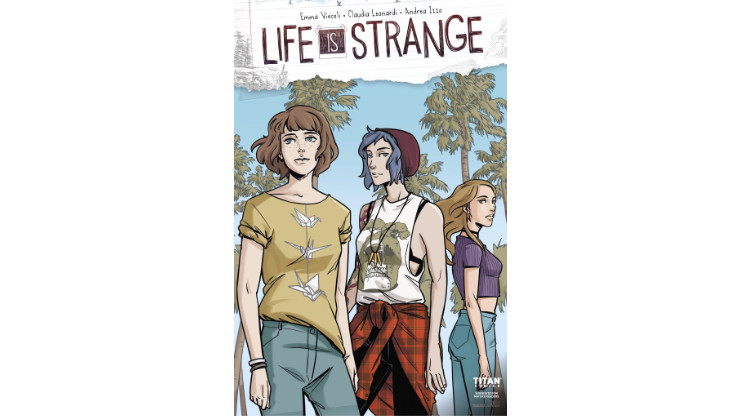
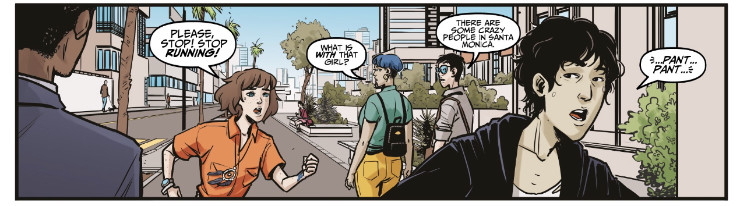
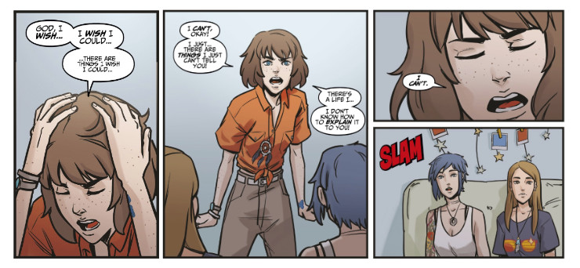
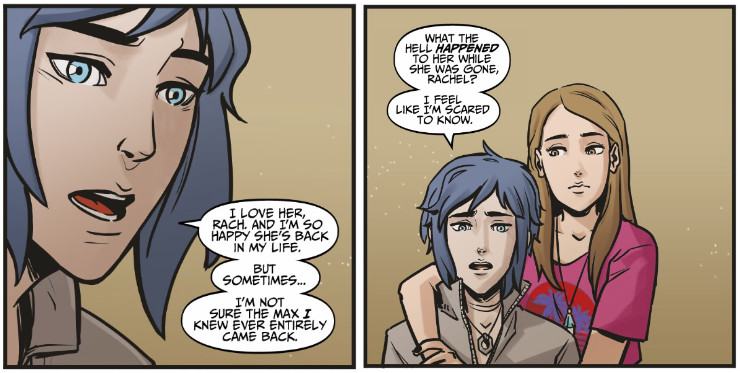
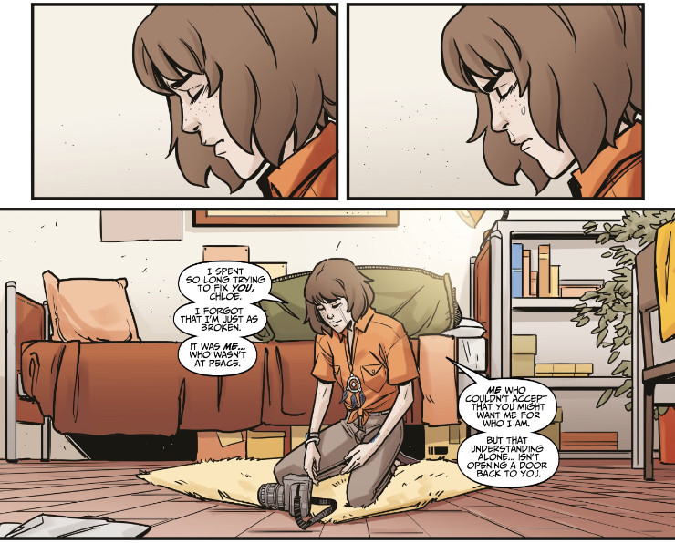

Life is Strange comic book vol. 6 (Waves #2)
The new arc of Life is Strange comic book shows Max’s life after she had left her original timeline and looked for the one in which she could give Chloe happiness she deserved. It’s been two years since Max made her choice but she still struggles to accept it. Did she choose right?
This article describes the second issue of Waves, the story arc that is supposed to provide us with a continuation to the plot described in the first four issues. You can read my review of the first issue of Waves or look at all my articles about Life is Strange comic book.
One look at the cover of the sixth issue gives us a hint of what we can expect. In the foreground we can see Max who has dreamy look, focused on something beyond the picture. Then there’s Chloe and Rachel, both girls appear to stare in the same direction. There are some palm trees in the background, indicating that we are still in Santa Monica. In the contrast to the cover of issue 5, showing Max with blue skin (like if she had jumped straight from Cameron’s Avatar), this cover is plain, ordinary looking (but not in a bad way). I wonder whether Max looks (or imagines) at Chloe she left behind in the other timeline. Maybe she contemplates her choice made in Arcadia Bay?
 The cover of issue 6 is more vanilla than the previous one. I’d say it’s the most ordinary looking cover we’ve seen so far (which is not necessary a bad thing)
The issue begins with Chloe working in the workshop on her first commissioned sculpture. It is a very satisfying scene, it fits Chloe so well. The glow in her eyes visible when she works on the sculpture shows that she does something she is really proud of, something that gives her joy. The whole setting, welding machine, various tools, scraps, etc. remind me of the American Rust. This new Chloe resembles the old one, left in Arcadia Bay, in more ways than one could think.
Next we can see Rachel talking to Max. I know I’ll repeat myself, but I love how Max changed her choice of clothes since the original Life is Strange. Gone are grey hoodies, now she wears more vibrant clothes, clothes that – in my opinion – suit her so well. Rachel confesses to Max that she can see how Chloe changed, and that she changed for the better.
“Hm… So what changed?”
“Honestly? … Chloe. It sounds corny, but… Chloe’s so real, you know? She calls my bullshit in a way no one else wold dare. She grounds me.”
“Like… an anchor?”
“Oh my god, yes! Yes, she’s like n anchor. In the best way. Tethers me to life. Makes me want to do it better.”
This is something very uplifting. Knowing that Chloe has a positive influence on Rachel. It means that Chloe herself is in a stable, happy mindset. She is happy enough not only to enjoy her life and what it offers, but also to be a guiding light, be an anchor to someone else. This shows how huge potential Chloe has in every timeline. She is capable of doing great things, of being great person, of inspiring others. And this is hella awesome!
The weirder part of the conversation begins when Rachel admits that she felt threatened by Max when she appeared in Rachel’s and Chloe’s lives two years ago. While it is understandable that Rachel perceived Max as a potential threat due to the fact that she used to be Chloe’s best friend – even before Rachel met the blue-haired punk – it is also strange, considering how confident Rachel was. The discussion quickly turned into Max’s expiation for abandoning Chloe for five years; which was interrupted when both girls, being in the grocery store, noticed the sad guy in black from the previous issue. The guy left the shop without paying for his food (it might’ve already become his habit?) but it looked like only Max had noticed it. She decided to pursue him, leaving Rachel with their groceries.
This was one of the most dynamic scenes in the whole Life is Strange comic book. I didn’t know Max would be so determined to discover the secret of that guy. There was one thing that was especially interesting: some people could see that guy, at least sometimes, so it looked like he was not a part of another timeline (like Dana or Warren in Dust).
 Max is desperate to discover the secret of the emo guy
When Max thought that she had lost him, he approached her himself, asking why she was following him. And… his nose was bleeding. This is a strong indication that he has some sort of powers but does he have a time-travelling powers like Max? Or maybe he can move freely between realities/timelines? Max didn’t get much information from him, except from “Stay the hell away from me!” Well, we are only halfway through Waves story arc, so I think it’s quite possible that some new informations about that mysterious guy will be revealed in the two last issues (or it will all end up with a cliffhanger, like Dust did).
In the next scene we are moved to the girls’ apartment, in which both Chloe and Rachel show that they are worried about Max and want to know the reason for her strange behaviour. While Chloe saw that boy in the coffee shop and Rachel in the grocery store, they don’t know that there is another reason why Max was so insistent on finding the truth about him. She still hasn’t shared her secret, how it happened that she suddenly appeared in L.A. two years ago. Instead, Max tries to give the girls subtle hints that there might be something strange at play here, but she ends up frustrated that she can’t tell them the truth. She finally bursts out, crying that there are things she can’t tell them.
 Max believed this is the reality she belongs to, but she still can’t forget about the other life, the other Chloe, timelines she crossed. She can’t share her thoughts with Chloe and Rachel which results in frustration and sense of being lost
To be honest, this is one of few things that made me truly enjoy this issue of Life is Strange comic book. Previously we had a lot of focus on Chloe and Rachel, their relationship and problems (especially in the context of Rachel’s coming performances on the East Coast). Max was somehow lost in it. It was plainly visible in the fifth issue that she was thirdwheeling Amberprice so much. In this issue Max finally raises to the role of the main character, this issue is Max-centric, and that’s what distinguishes it from the previous ones, making it special and – in my personal opinion – much better.
When on the next day Rachel and Chloe discussed Max’s behaviour, there was some very important dialogue that I believe will have huge implications on Max’s future:
”Did she ever lose it like that… you know, before?”
”No. I’ve never seen her like that, Rach. Freaked me the hell out. (…) That girl that went crazy last night? Im not sure I knew her very well either. ”
”Huh? What do you mean?”
”It’ll sounds [sic] nuts, but… sometimes it’s almost like she’s a different person. (…) sometimes… I’m not sure the Max I knew ever entirely came back.”
I know this might be just a way of showing how much the events of Life is Strange, the final choice, changing timelines and witnessing flickers between the timelines has changed Max. But knowing how symbolic Life is Strange always was, it may also mean that this is not the timeline this particular Max belongs to. She might have made a wrong choice when she was in the Transect. She chose a wrong timeline again. And while this timeline does not try to actively get rid of her, it might be that she will eventually have to find her happiness elsewhere.
 This is so powerful scene… Chloe realises that live wasn’t as easy for Max as she might’ve initially thought…
This issue of the comic book nails it when it comes to showing both Max’s emotional turmoil and Chloe’s (and also Rachel’s, to a lesser extent) fears about her best friend. For me this is the best written issue of Life is Strange comic book yet. This is what the whole story of the comic book should have been about in the first place. Also, while I am not a fan of Rachel Amber, she reacts in a good way here, telling Chloe that Max needs her. We all know that Chloe often has a problem with acting when something bad happens to the person she cares about, she sometimes needs a little encouragement to do the right thing, and Rachel provided such an encouragement.
In the meantime Max made a decision. She started packing to try to get away from Chloe, probably to somehow return to the previous timeline if possible. She stated herself, contemplating things as she packed her bag:
Chloe, I don’t know why I was pulled here. Like I have a right to walk into your life here and make it harder? That’s everything I don’t want to do. There has to be a reason. That boy. I hate lying to you, but how do I even begin to share the truth without breaking what you have here?
This scene was so evocative, so emotional. Max’s doubts and fears, her pain, pain she carried over through all the timelines, slowly accumulating it, to the point when it just became too much. It was difficult to read. It hurt. But it was well-written, in the true spirit of Life is Strange. When we strip away all additional plot, secondary characters, locations, etc., Life is Strange was always about Max and Chloe. And in this issue, at last, we can explore implications of Max’s decision and what it meant to her, to change her timeline, to leave that Chloe behind, in Arcadia Bay, and come here, to this Chloe and Rachel. We can see that Max still love Chloe, love all Chloes in all the timelines, and even despite the fact she hurts so much, she does not want to interfere with Chloe’s happiness. She is willing to, once more, make a sacrifice.
 This issue of Life is Strange comic book allowed us to see how much Max has sacrificed for Chloe, to give her happiness she deserved
Max didn’t have a chance to finish her packing before Chloe came to her room, to talk about recent events and to tell Max she was worried about her. Of course she momentarily discovered Max’s intentions to runaway (even though the brunette assured her she was only packing „symbolically”). She assured Max that she was not alone and that she could talk to Chloe about what bothers her. She pleaded to Max to let Chloe help her. But Max turned to her with eyes full of tears.
I-I really don’t think you can, Chloe.
This singe sentence broke my heart.
Chloe talked to Max about how she was angry when William died, how she had serious issues with Joyce and barely spoke to her for almost a year. She achieved a small success, making Max promise to not leave without letting her know first. Although this was a small victory, it was something of a tremendous importance. In Dust we saw that Chloe had finally come to terms with losing Joyce in the storm, she grew up as a person, become more mature. And this new Chloe, although her life was not marked by the tragedy of losing both parents, she was still more mature, more familiar with grief and anger and with ways of dealing with them. This showed great development of her character and was another thing that I appreciated in this issue.
And the last part, completely unexpected, was the discovery of Chloe’s patron, who ordered the sculpture she made (called the Storm, by the way). It was… Tammi from the High Seas. Wowser. I did not expect that! The whole band arrived to L.A. to give a few concerts, it turns out that Tammi is a cousin of Paul, owner of the coffee shop Max cooperates with. Of course the band didn’t know Max (they never met in this timeline) but it leads to an interesting question: is their meeting a pure coincidence or there are other powers at play here? The first thing that comes to my mind is the mysterious guy in black, especially because he was right out of the coffee shop, starting a conversation with Max when she had to get some fresh air after the initial shock of meeting High Seas in this timeline. It looks like he has some big reveal to make, but it’s a mystery so far. I guess we will find out in the two last issues of Dust.
I haven’t been a fan of Life is Strange comic book so far, due to many issues I mentioned in my previous articles. But being completely honest with you, this was the first part of the comic book that I genuinely enjoyed. The part of the story presented in issue #6 was well-written, consistent and had this distinctive Life is Strange vibe that was missing from previous issues. I love the fact it explored the dynamics between Max and Chloe instead of focusing on Chloe and Rachel. I also really appreciate that it gave us an insight into Max’s thoughts and the burden she’s been carrying with her for the last two years. I have no idea how the story will develop in the seventh issue, but this was a very good issue that I can recommend.
Yay!
- the issue focuses on Max and her feelings
- dynamics between Max and Chloe
- Chloe being supportive for Max
- Chloe’s workshop (and the sculpture)
- High Seas are back! (^.^)
Nay!
- possible importance of the sad guy for the story
- we still know virtually nothing about the sad guy
- repetitive scenes with the sad guy disappearing or running from shops
- typo in the text (not the first one…)
- Max may never find the right timeline for her
Overall summary in three words
promising, poignant, introspective